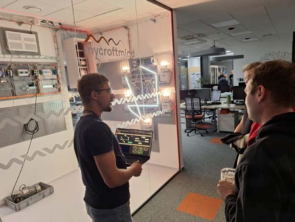
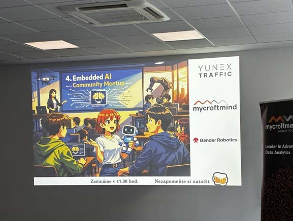
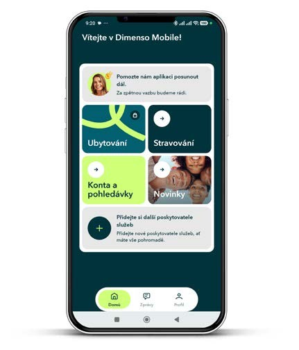
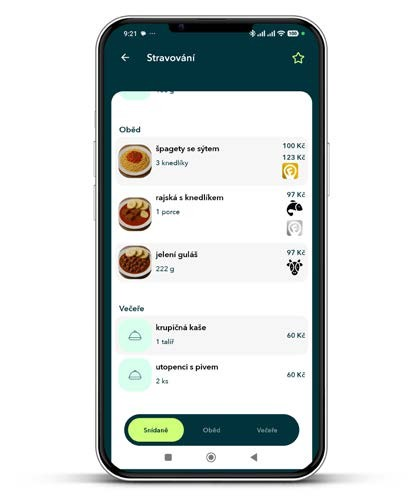
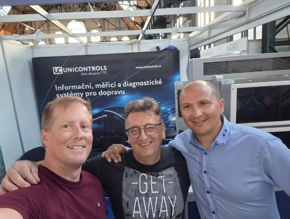
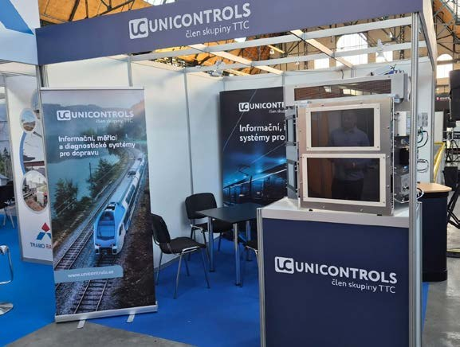
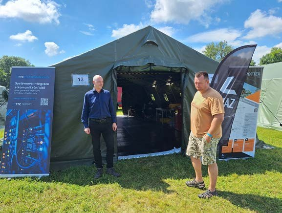
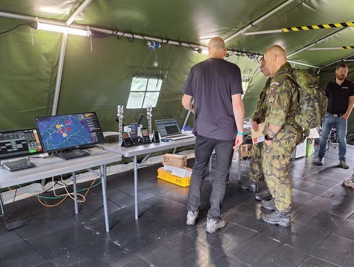

Milé kolegyně, milí kolegové,
jak jste se mohli dočíst v posledním Téčku, na základě výsledků dotazníkového průzkumu jsme se rozhodli zavést elektronický newsletter, který vám přinese průběžné informace o dění ve Skupině TTC i mezi jednotlivými vydáními časopisu.
Nyní se k vám dostává první vydání newsletteru Téčko Extra, ve kterém najdete aktuální novinky, zajímavé projekty, úspěchy i další informace z našich firem.
Téčko Extra tvoříme pro vás. Budeme rádi za vaši zpětnou vazbu.
Přeji vám příjemné čtení.

TTC TELEPORT pokračuje v rozvoji svého datového centra TTC DC2. V těchto týdnech odstartovala výstavba tří nových datových sálů a zároveň dokončuje modernizaci části energetické infrastruktury v podobě přechodu na lithiové záložní baterie.
Nové datové sály vznikají v reakci na rostoucí poptávku stávajících i nových klientů z oblasti finančních služeb, digitálních služeb a online prodeje nebo strategických investic. Všechny nové kapacity budou fungovat v režimu vysokého SLA standardu, který TTC DC2 dlouhodobě poskytuje. Do provozu budou nové datové sály uváděny postupně v průběhu let 2026 a 2027. Rozšíření přinese navýšení kapacity o desítky racků i stovky kW výkonu.
Součástí rozvoje TTC DC2 je také modernizace energetického zázemí. TTC TELEPORT aktuálně dokončuje výměnu technologie záložních baterií pro II. energomodul, konkrétně přechod z původních olověných akumulátorů na moderní lithiové baterie. Nová technologie přinese lepší monitoring, vyšší kapacitu zálohování i efektivnější provoz. Přechod zároveň navazuje na několikaleté zkušenosti z datového centra TTC DC1, kde TTC TELEPORT lithiové baterie úspěšně testuje a využívá již přibližně tři roky. Do budoucna společnost počítá s postupnou obměnou dalších olověných baterií za modernější technologie napříč svou infrastrukturou.

Pražští zastupitelé na konci května schválili nový Metropolitní plán, který od 1. září nahradí dosavadní územní plán z roku 1999 a určí podobu rozvoje hlavního města na další desítky let. Pro TTC je to důležitý milník také proto, že potvrzuje další rozvoj Technologického parku Malešice.
Proměna bývalého průmyslového areálu v moderní centrum technologií, inovací a podnikání je výsledkem několikaleté práce a spolupráce Skupiny TTC a zejména kolegů z TTC REAL ESTATE s hlavním městem Prahou, Institutem plánování a rozvoje i dalšími partnery. Nový Metropolitní plán nyní vytváří jasný rámec pro pokračování této transformace.
Technologický park Malešice má ambici propojit technologické firmy, startupy, výzkumné organizace i talentované odborníky do jednoho živého ekosystému. Díky své strategické poloze a plánovanému rozvoji okolního území má příležitost se stát jedním z klíčových inovačních center metropole. Jeho vlajkovou lodí bude technologické centrum OXYMA, které se stane symbolem moderního rozvoje této části Prahy.

V brněnských prostorách Mycroft Mind se tentokrát sešla komunita nadšenců do embedded a edge AI. Čtvrté setkání Embedded AI Community, které pravidelně organizuje Yunex Traffic, přilákalo několik desítek vývojářů, technologických nadšenců i lidí z oboru.
Hlavním bodem programu byla prezentace Martina Třísky o projektu SkyEye – autonomním prediktoru výroby fotovoltaické energie běžícím přímo na embedded platformě s kamerou a senzory. Nechyběly ani ukázky systému v reálném provozu nebo pohled do zákulisí toho, jak podobné technologie vznikají. Program doplnil také lightning talk společnosti Bender Robotics zaměřený na vývoj a testování firmware. Velký zájem vzbudily i komentované prohlídky Mycroft Mind LABu.
Jan Remeš návštěvníkům ukázal demonstrátor inteligentní měřicí infrastruktury a technologii Topology Identification, která dokáže z dat elektroměrů rozpoznat skutečné uspořádání nízkonapěťové sítě. Paralelně probíhaly také menší prohlídky kanceláří a ukázky hardwaru. A protože podobné akce nejsou jen o technologiích, ale i o lidech, nechyběl networking, diskuze a neformální debaty, které se v kancelářích protáhly až do pozdních večerních hodin.



Naše online prezentace firem a projektů napříč Skupinou TTC postupně modernizujeme tak, aby byly přehlednější, rychlejší a lépe odpovídaly tomu, co dnes děláme a kam směřujeme.
V nové podobě se tak představuje web TTC MARCONI, aktualizovanou podobu svých stránek představil také TTC TELEPORT a BRAIN CONNECT Prague. Weby přinášejí svěžejší design, jednodušší orientaci i lepší představení našich technologií, služeb a projektů. A další budou postupně následovat.

Začátek června přinesl ANETE dvě významné reference. Do ostrého provozu byly spuštěny systémy Dimenso KREDIT ve Fakultní nemocnici Ostrava a Fakultní nemocnici Brno. V obou případech zajišťují zaměstnanecké i pacientské stravování včetně skladového hospodářství a normování. Obě nemocnice patří mezi největší zdravotnická zařízení ve svých regionech a dohromady obsluhují přibližně 16 tisíc strávníků.
Pokračuje také projekt v Lázních Třeboň, kde byl letos spuštěn systém pro lázeňské stravování. Jde o vůbec první nasazení ANETE v lázeňském segmentu a zároveň první projekt, který vedle stravovacího systému zahrnuje i kompletní restaurační provoz. Systém dnes obsluhuje jedenáct provozů a premiéru si zde odbyl také nový Mobilní číšník.
Novinkou je i Dimenso Mobile, společný produkt ANETE a ApS Brno, který propojuje objednávání jídel s ubytovacími službami do jedné mobilní aplikace. Prvním zákazníkem se stala Vysoká škola báňská v Ostravě.



Společnost TTC Controls se svou značkou UniControls se i letos zúčastnila mezinárodního veletrhu Rail Business Days 2026 v Ostravě, který patří mezi nejvýznamnější setkání odborníků z oblasti železniční dopravy ve střední Evropě. V areálu Trojhalí Karolina se sešlo téměř 140 vystavovatelů a tisíce návštěvníků z řad výrobců, provozovatelů i správců železniční infrastruktury.
Na našem stánku jsme představili vybraná zařízení a technologie pro moderní železniční dopravu. Veletrh byl zároveň příležitostí potkat se se zákazníky, partnery i kolegy z oboru, vyměnit si zkušenosti a podívat se, kam se železniční technologie zase o kus posunuly.
O naši expozici byl zájem i během Studentského dne. Budoucí technici a inženýři si mohli vystavené zařízení sami vyzkoušet a dozvědět se více o jeho fungování i praktickém využití. A protože se u stánku téměř nezastavili, prošlo zařízení i neplánovanou, ale úspěšnou zátěžovou zkouškou.



Společnost TTC TELEKOMUNIKACE se začátkem června představila na Konferenci spojovacího vojska 2026, jedné z nejvýznamnějších domácích akcí zaměřených na komunikační technologie, kybernetickou bezpečnost a digitalizaci obrany. V Lipníku nad Bečvou se sešlo na 650 odborníků z armády, státní správy, akademické sféry i technologických firem.
Prezentovali jsme zde naše řešení pro moderní kritickou komunikaci – od stacionárních mikrovlnných spojů Ericsson přes nový standard mobilních kritických služeb MCX až po hlasový dispečerský systém KONOS. Konference byla zároveň příležitostí k řadě pracovních setkání se zástupci Armády ČR, NÚKIB, NAKIT, CETIN, T-Mobile i dalších partnerů z oboru.
Letošní ročník se nesl ve znamení digitální suverenity a moderních technologií pro obranu a bezpečnost. Symbolickým momentem celé akce bylo také otevření nového polygonu pro testování pozemních dronů brigádním generálem Petrem Šnajdárkem, náčelníkem spojovacího vojska Armády ČR.



Od 1. července 2026 vstupuje v platnost nová směrnice SOS 006, která upřesňuje způsob používání AI v těch společnostech Skupiny TTC, které ke směrnici přistoupí.
Novinkou je také interaktivní dotazník pro ověření AI nástrojů, který pomůže rychle zjistit, zda je konkrétní aplikace v souladu s naší Maticí použití AI. Výsledky budou zároveň sloužit jako podklad pro schvalování nových nástrojů do firemního white-listu, o které se stará tým složený ze zástupců IT, bezpečnosti a práva. Do white-listu AI nástrojů jsme zařadili první schválené aplikace a postupně rozšiřujeme i nabídku centrálně pořizovaných licencí prostřednictvím IT.
Abychom si mohli navzájem předávat zkušenosti a tipy z praxe, vzniklo nové diskusní fórum AI, kde se můžete zeptat na konkrétní nástroje, podělit se o zkušenosti nebo získat inspiraci od kolegů. Připravujeme také program podzimních AI workshopů. Pokud máte téma, které by vás zajímalo, nebo tip na oblast, kterou bychom měli otevřít, budeme rádi za vaše náměty.

O TTC a našich firmách je v médiích slyšet stále častěji. Přinášíme výběr zajímavých článků a rozhovorů z poslední doby. A pokud vás zajímá, kde se o nás píše dál, navštivte novou sekci TTC v médiích na intranetu Skupiny TTC.
Mycroft Mind zaujal projektem chytrého řízení nabíjení elektromobilů v Kataru. Psala o něm například Lupa.cz nebo Newstream.
Mediální pozornost vzbudila také akvizice administrativní budovy České spořitelny, díky které TTC dále posiluje své realitní portfolio. Více například v článku Newstream.
Newstream.cz publikoval článek o využití umělé inteligence pro prediktivní diagnostiku v železniční dopravě. Jan Otýpka z TTC MARCONI v něm přibližuje, jak mohou data a AI pomoci předcházet technickým závadám vlaků.
V příloze Budoucnost železnice Hospodářských novin vyšel rozhovor s Martinem Bajerem z TTC MARCONI o budoucnosti železniční komunikace a standardu FRMCS.
{kind=link}
Rozhovor s Tomášem Bortem z Mycroft Mind přiblížil zapojení firmy do evropského projektu XL-Connect zaměřeného na chytrou energetiku a elektromobilitu. Rozhovor na webu XL-Connect.